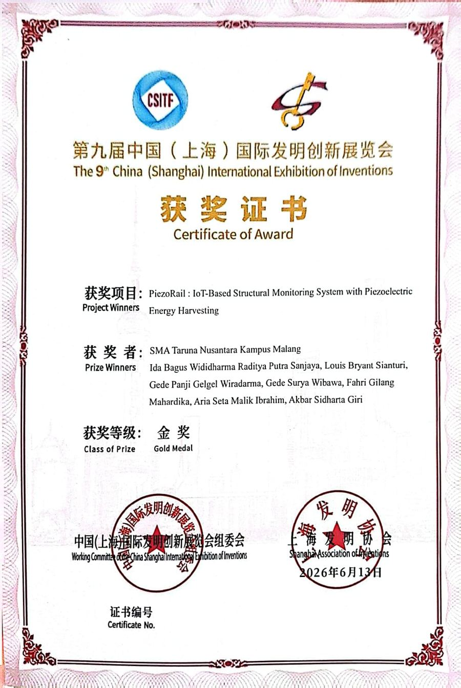
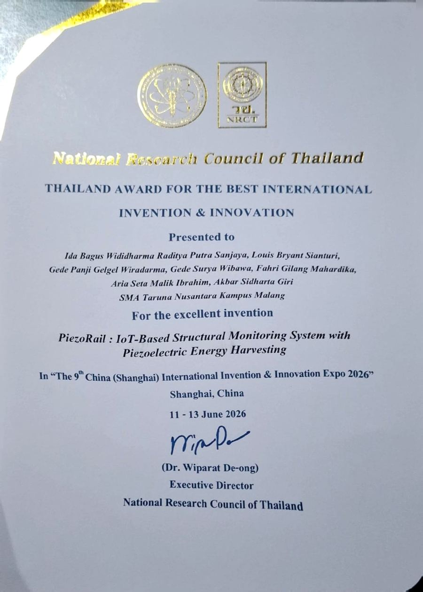

PiezoRail
A prototype railway monitoring node that is powered by the vibration of passing trains.
Honest status
PiezoRail is a working prototype. It has not been installed on a real railway.
The dashboard at piezorail.online is currently offline.
The idea
A sensor on a railway needs power. I wanted to see if the train itself could provide it. Piezoelectric pads produce a small voltage when they are pressed or vibrated. If that energy is stored and used carefully, a small sensor node could run without a battery change or a power cable.
I built the whole system around that idea: the energy harvester, the sensor node, the receiver, and the dashboard.
How it works
- Train vibrationMoves the piezoelectric pads.
- Piezoelectric padsTurn the movement into electrical energy.
- Supercapacitor, 5.5 V, 2 FStores the energy.
- Transmitter node, ESP32-C6Wakes up, reads MPU6050 or ADXL345 (vibration) and DS18B20 (temperature), sends the data, then goes back to deep sleep. A MOSFET switches power to the sensors.
- Wireless linkESP-NOW in one version, Zigbee in another.
- Receiver, ESP32-S3Detects anomalies, saves a log to an SD card, and publishes the data over MQTT.
- DashboardMulti-tab charts built with Chart.js.
What the system watches
- Vibration (RMS) at each node.
- Temperature. Rails expand when they get hot, so temperature matters for structure.
- Capacitor voltage. I use it as a simple measure of how active the rail is, because more train activity should charge the capacitor faster.
What I built
Hardware
The transmitter uses an ESP32-C6, three sensors, a MOSFET for power gating, and the supercapacitor. After I program the ESP32 over USB, it runs only from the energy stored in the supercapacitor.
Firmware
The firmware is written around deep sleep, so the node uses as little energy as possible between readings. I wrote two transmission versions, one with ESP-NOW and one with Zigbee. The receiver firmware handles MQTT publishing, anomaly detection, and SD card logging.
Dashboard
The dashboard has several tabs and uses Chart.js. It shows the live and logged data from the nodes.
The design journey
Grade 10: research without measurements
I first worked on this idea in my school research team (OPSI) in Grade 10. My school had no oscilloscope and no budget, so I could not measure anything. The work stayed a literature study.
First prototype: it burned
My first prototype was a simple transducer on a breadboard. The circuit was messy and it burned during testing. I did not know why. The jury still understood the concept, but I knew I could not build on that circuit.
Second prototype: rebuilt from zero
I rebuilt the prototype from the beginning. At that stage it was only an energy harvester. It was not yet a monitoring system. I researched the circuit layout, planned every component, and soldered it by hand.
The result was weak. The peak output was about 0.9 V. My target was 2 to 5 V.
The fix: pressure is force divided by area
I used the idea that pressure equals force divided by area. If the same force acts on a smaller area, the pressure is higher. I arranged many glue sticks on top of the piezoelectric pad and clamped them under clear acrylic. The sticks concentrate the force on the pad.
The next test gave about 9 V. This was an open-circuit measurement, with no load connected. It is not usable power. I explain this more in the Limits section.
What I learned
- Measure before you claim. Without an oscilloscope I could only read papers. Once I could measure, I learned more in one test than in months of reading.
- A failure you do not understand cannot be fixed. After the breadboard burned, I stopped guessing. I planned every component and built the circuit again carefully.
- Simple physics can solve a hardware problem. Changing the contact area, not the pad, took the output from 0.9 V to about 9 V.
- Voltage is not power. A high open-circuit voltage can still deliver very little energy. I want to learn this properly in power electronics.
- One person cannot do everything. I kept the technical core, and I gave other jobs to teammates who were better at them.
Limits
- PiezoRail has never been installed on a real railway. I do not know how it behaves with real trains.
- The 9 V result is an open-circuit voltage with no load. It does not tell how much energy the pad delivers.
- I have not properly measured the energy from one press. My rough estimate is that about 50 hand presses give around 1 V on the capacitor. This is an estimate, not a measurement.
- The anomaly detection has not been tested on real rail data.
- The dashboard is offline for now.
Closing these gaps is the point of the next steps below.
The team
Perzolex Tech is a team of 7 students from different grades. I am the Lead Engineer and Team Lead. I built the hardware, firmware, and dashboard. I shared the other work by strength, and I chose and trained the presenters. For them I wrote an English training module and a bank of questions the judges might ask.
| Member | Role |
|---|---|
| Ida Bagus Wididharma Raditya Putra Sanjaya (Radit) | Lead Engineer and Team Lead, hardware, firmware, dashboard, presenter |
| Louis Bryant Sianturi | Pitch and business side, presenter |
| Gede Panji Gelgel Wiradarma | Build support, presenter |
| Gede Surya Wibawa | Presenter |
| Akbar Sidharta Giri | Design and presentation materials, brochures, booth visitors |
| Aria Seta Malik Ibrahim | Booth visitors and brochures |
| Fahri Gilang Mahardika | Booth planning |
Supervisors: Yuyu Pratiwi, M.Pd. helped arrange the team. Mr Muh Alwi Abdul Aziz supervised the team at the events.
PT KAI Daop 8 Surabaya stated its support for the project and sponsored the team's participation. There is no formal agreement (MoU).
Awards
| Year | Event | Result |
|---|---|---|
| 2025 | WSEEC | Silver |
| 2025 | ISIF | Gold |
| 2026 | Malaysia Technology Expo | Gold |
| 2026 | JDIE | Gold |
| 2026 | SHIE, Shanghai | Gold Medal, and the NRCT special award (Thailand Award for Best International Invention and Innovation) |
The official project title on the SHIE certificates is "PiezoRail: IoT-Based Structural Monitoring System with Piezoelectric Energy Harvesting". SHIE 2026 was held in Shanghai on 11 to 13 June 2026.
At JDIE 2026, my teammates presented the project, so my name is not on the official participant list. I built the project. At SHIE 2026, my name is first on the certificates.


Next steps
- Study power electronics, so I can measure and improve how much usable energy the harvester delivers, not only the open-circuit voltage.
- Measure the energy from each press properly.
- Return to Indonesia and work with PT KAI on a self-powered monitoring node, starting with one short test section.